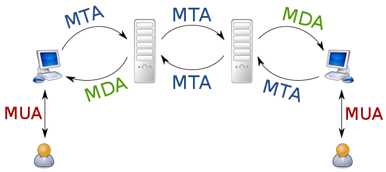

В терминологии электронной почты выделяются следующие компоненты:
MTA (англ. Mail Transfer Agent — агент пересылки почты) — отвечает за пересылку почты между почтовыми серверами; как правило, первый MTA в цепочке получает сообщение от MUA, последний передаёт сообщение к MDA; возможна реализация с отправкой почты через smart host.
MDA (англ. Mail Delivery Agent — агент доставки почты) — отвечает за доставку почты конечному пользователю.
MUA (англ. Mail user agent — почтовый агент пользователя; в русской нотации закрепился термин почтовый клиент) — программа, обеспечивающая пользовательский интерфейс, отображающая полученные письма и предоставляющая возможность отвечать, создавать, перенаправлять письма.
MRA (англ. Mail retrieve agent) — почтовый сервер, забирающий почту с другого сервера по протоколам, предназначенным для MDA.

В случае использования выделенных серверов для хранения почты пользователей всё взаимодействие пользователя с сервером может происходить по протоколам, не укладывающимся в эту схему.
Почтовые сервера обычно выполняют роль MTA и MDA. Некоторые почтовые сервера (программы) выполняют роль как MTA, так и MDA, некоторые подразумевают разделение на два независимых сервера: сервер-MTA и сервер-MDA (при этом, если для доступа к ящику используются различные протоколы — например, POP3 и IMAP, — то MDA в свою очередь может быть реализован либо как единое приложение, либо как набор приложений, каждое из которых отвечает за отдельный протокол).